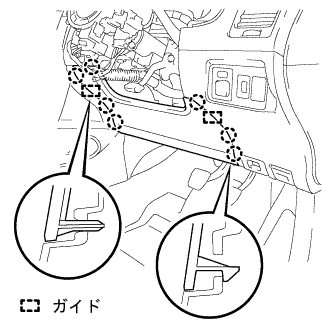
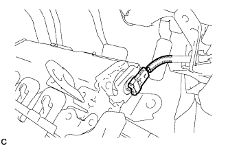
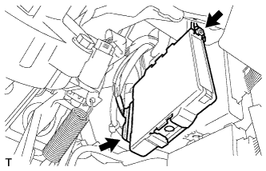

4WD Computer Assembly (4WD) Removal |
| 1. Handling and Work Precautions |
)| 2. Disconnect Battery Negative Terminal |
| 3. Remove Steering Wheel Cover Lower NO.3 |
| 4. Remove Steering Wheel Cover Lower NO.2 |
| 5. Remove Horn Button Assembly |
 |
Using a torx socket wrench (T30), loosen the 2 torx bolts until they turn freely.
Using needle-nose pliers, pull out the 2 torx bolts.
 |
Pull the horn button assembly toward the rear of the vehicle.
 |
Using a thin-bladed screwdriver with its tip wrapped with protective tape, release the lock of the airbag connector.
Disconnect the airbag connector and horn connector, and remove the horn button assembly.
| 6. Remove Steering Wheel Assembly |
Operate the tilt and telescopic mechanisms and fix the steering column assembly in its most extended and highest position.
 |
Remove the nut and put matchmarks on the steering wheel assembly and steering column assembly.
 |
Using SST, remove the steering wheel assembly.
| 7. Remove Steering Column Cover |
Release the tilt lever.
 |
Push the steering column cover (lower side) from the left and right to disengage the 4 claws.
 |
Insert a finger through the tilt lever opening of the steering column cover (lower side) and disengage the claw.
 |
Disengage the 2 claws and remove the steering column cover (lower side).
 |
Disengage the 2 claws and pins, and remove the steering column cover (upper side).
| 8. Fuse Box Opening Cover Removal |
 |
Disengage the 4 clips and 4 claws.
Disconnect each connector and remove the fuse box opening cover.
| 9. Remove Instrument Panel Under Cover Sub-assembly NO.1 |
 |
Remove the 2 screws, disengage the claws and remove instrument panel under cover NO.1.
| 10. Remove Instrument Panel Airbag Assembly LWR NO.1 |
 |
Remove the 4 bolts.
 |
Detach the instrument lower airbag No.1 from the 6 claws and 2 guides.
 |
Disconnect the connector and remove the instrument lower airbag No.1.
| 11. Remove 4WD Computer Assembly |
 |
Disconnect the connector.
Remove the bolt and 4WD computer assembly.